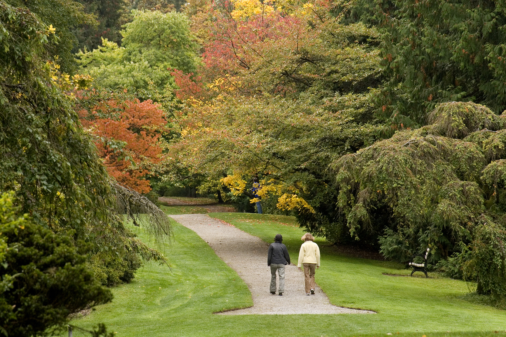

Washington Park Arboretum
A pocket of wilderness in the heart of Seattle, this is a great leisurely nature path with forests of maple trees, magnolias, oaks, salmonberries, and azaleas. The park is accessible year-round, but in the springtime, you will see the most beautiful flowers and trees.

Quick Facts
- Location: Seattle-Tacoma Area
- Difficulty: Easy-peasy
- Length: 5 miles, round trip
- Elevation:
- Gain: 50 ft
- Highest Point: 150 ft
- Hiking Permit: None
- Trail Permit: None
- Trail Condition: Good, frequently travelled
- Extras: The nearby public park offers locations for picnicking and lounging, for members of the hiking party who may not want to hike the whole trail.
Recommended Equipment
- Backpack
- Water for the day
- First-aid kit
- Snacks
- Sunscreen
Recommended Reading
Wildflowers of the Pacific Northwest